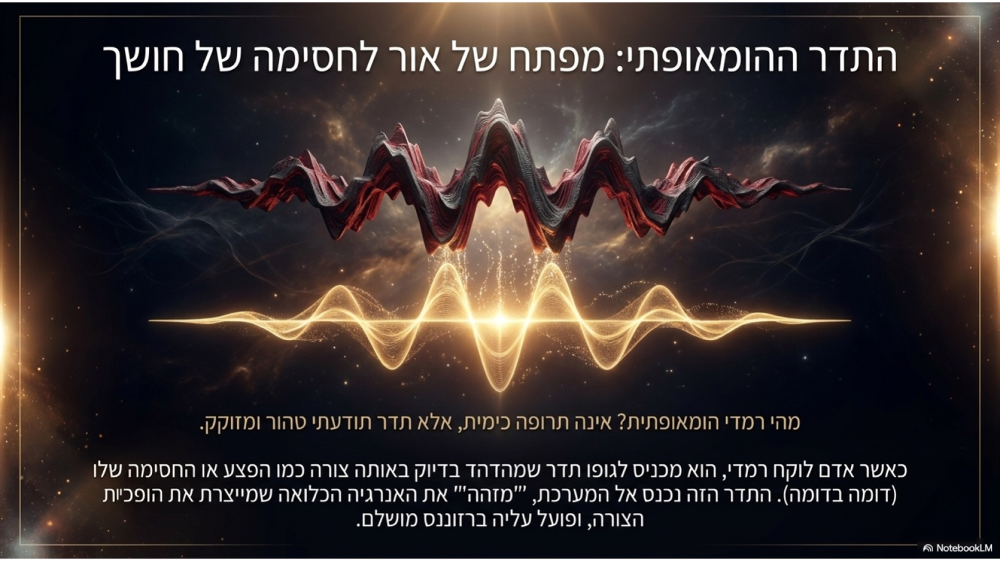
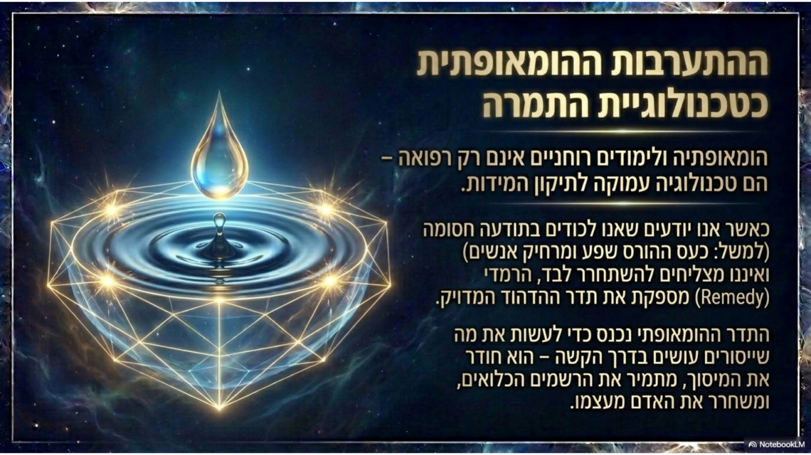

אם נודה על האמת, במבט ראשון הומאופתיה קלאסית וחכמת הקבלה עשויות להיראות כמו שני עולמות שונים לגמרי. הראשונה היא שיטת רפואה טבעית שפותחה לפני כמאתיים שנה, והשנייה היא תורת הסוד העברית והעתיקה. אך כשצוללים פנימה, מגלים תגלית מרתקת: שניהם מדברים בדיוק על אותה המציאות.
שתיהן מסתכלות על האדם לא כעל "מכונה שמקולקלת בחלק מסוים", אלא כעל נשמה ורוח המלובשות בגוף. שתיהן מבינות שהסימפטום החיצוני הוא רק קצה הקרחון – והריפוי האמיתי חייב להתחיל מהשורש הפנימי ביותר.

1. המקור: "כוח החיים" מול "האור האלוהי"
בבסיס ההומאופתיה הקלאסית עומד מושג שטבע מייסדה, ד"ר סמואל האנמן: "כוח החיים" (Vital Force). זהו האות האנרגטי, הבלתי נראה, שמניע את הגוף, מאזן את הרגשות ומחזיק אותנו בחיים ובבריאות. כשהכוח הזה מוצא מאיזון – מתפתחת מחלה.
בחכמת הקבלה, המושג המקביל לכוח החיים הוא האור האלוהי או חיוניות הנשמה. הקבלה מלמדת שהאדם הוא צינור לשפע רוחני. כאשר ישנה חסימה או חוסר איזון פנימי, השפע אינו זורם בחופשיות – והדבר מתורגם בסופו של דבר לכאב, למחלה או למצוקה נפשית.
2. התהליך: חוק הצמצום והזכוך
איך מגיעים אל הרובד העמוק הזה של כוח החיים? כאן נפגשים שני העולמות במנגנון מופלא של צמצום וזיכוך. בטבלה ובדיאגרמה שלפניך מוצגת ההקבלה בין השלבים:
בקבלה: צמצום האור ליצירת כלי.
בקבלה: זיווג דהכאה ובירור ניצוצות.
בקבלה: המתקת הדינים בשורשם.
תוצאת התהליך מופלאה: החומר הפיזי כמעט ונעלם, אך מה שנשאר הוא "זיכרון זך" ותדר עמוק מאוד. ככל שהפוטנץ הומאופתי גבוה יותר (עבר יותר דילולים וניעורים), כך השפעתו עמוקה וזכה יותר – הוא מפסיק לפעול רק על הגוף הפיזי, ומגיע ישר אל רובד הנפש והרוח.

3. הדרך: "חוק הדומים" והמתקת הדינים בשורשם
אחת התובנות העמוקות ביותר של ההומאופתיה היא חוק הדומים – "דומה מרפא דומה". במקום להילחם במחלה בעוצמה נגדית, ההומאופתיה מגישה לאדם תדר המדויק בדיוק לתמונה הנפשית והפיזית שלו. המפגש הזה פועל כמראה: הוא מעורר את כוח החיים לזהות את החסימה – ולרפא אותה מבפנים.
בקבלה, העיקרון הזה מוכר כחוק "אין הדינים נמתקין אלא בשורשן". כאשר אדם שרוי בקושי או בחסימה, הדרך להמתיק את הקושי אינה לברוח ממנו, אלא לגעת בדיוק בנקודת השורש שלו ולהעלות אותה למקור.
רוצים לצלול מעבר לתאוריה?
הצטרפו אלינו למסע מרתק שבו נלמד איך לרתום את העומק של הקבלה ואת הכלי המעשי של ההומאופתיה הקלאסית לריפוי, לאיזון ולצמיחה רוחנית.
לפרטים והרשמה לתוכנית הלימודים הקרובה